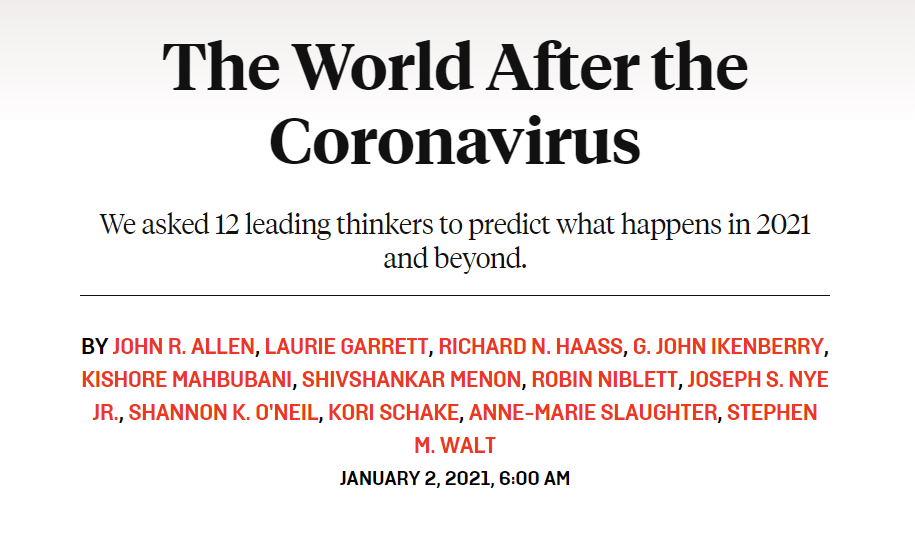

收录于合集

编者按
2020年3月，在全球抗击新冠肺炎疫情还处在“上半场”时，《外交政策》杂志曾邀请约瑟夫·奈、约翰·艾伦、马凯硕、史蒂芬·沃尔特、约翰·伊肯伯里等12名世界各国国际关系学界顶级专家就疫情对国际关系的影响进行了深入分析。随着新年的到来，《外交政策》再次邀请了这12名专家，对2020年人类抗疫历程进行复盘，并对2021年“后疫情时代”的世界进行展望。
原文链接：【重磅】约瑟夫·奈等预测：新冠疫情之后，世界将何去何从？| 国政学人 第362期

【编译】 吕紫烟、姚寰宇（国政学人编译员，山东大学东北亚学院国际政治与经济系）
【排版】 高辉
【美编 】张越涵
【来源】 https://foreignpolicy.com/2021/01/02/2021-coronavirus-predictions- global-thinkers-after-vaccine/
文章目录
1. 约翰·艾伦 ：一个呼吁领导的时代
2. 安妮-玛丽·史劳特 ：革命的种子已悄然种下
- 劳里·加勒特 ：全球化正在迅速转变
4. 马凯硕 ：亚洲世纪即将开启
5. 香农·奥尼尔 ：国家行动主义的新时代
6. 史蒂芬·沃尔特 ：威权主义者现在看上去更糟
- 理查德·哈斯 ：不，疫情并不是国际关系的转折点
8. 科里·舍克 ：自由经济将会反弹
9. 希夫山卡•梅农 ：一个分裂成泡沫的世界
10. 罗宾·尼布莱特 ：中国将飞速崛起
11. 约瑟夫·奈 ：没有一个政府能独善其身
12. 约翰·伊肯伯里 ：后疫情世界：一个双重人格的世界
新冠肺炎在全球肆虐已一年有余，其重塑的全球秩序轮廓也开始出现。正如该病毒摧毁了人们的生活、破坏了经济、改变了选举结果一样，它还导致国家内部和国家之间发生政治和经济权力的永久转移。为了帮助我们理解随着危机步入2021年新阶段而发生的这些变化，《外交政策》（Foreign Policy）再次邀请12位来自世界各地的思想大家，对大流行后的全球秩序进行预测与评估。
1. 一个呼吁领导的时代
【题目】 A Time for Leadership
【作者】 约翰·艾伦（John Allen）：布鲁金斯学会（Brookings Institution）主席。
在这场全球性健康危机中，几乎没有赢家。不是因为这种疾病超出了我们的控制范围，而是因为在疫苗可用之前，大多数国家都未能发挥领导作用和社会自律来控制疫情。
新冠肺炎疫情迅速成为压倒脆弱国际体系的最后一根稻草，暴露了国际体系的脆弱性，放大了其弱点，并使得长期困扰国际社会的问题进一步加剧。在最基本的层面上，这一艰难时刻凸显了全球卫生系统的不足，迫使许多国家在确定那些国民最应该得到医疗服务的问题上，做出了颠覆道德的决定。此外，面对这种可怕的疾病，各国没有选择建立一个新的全球联盟，而是采取了孤立主义政策。因此，当全世界的确诊病例再次激增时，仅有零星而无效的回应，美国便是最糟糕的例子之一。
实际上，新冠肺炎疫情代表了一系列复杂而相互关联的跨国问题，需要以领导驱动（leader-driven）的多边解决方案。 为了解决系统性种族主义、气候变化和全球经济复苏等问题，我们必须加强共同的国际秩序，而不是像现在这样继续对其进行削弱。 尽管科学最终将拯救我们，但若缺乏领导力，就不可能采取协调一致的行动来抗击该疾病，更不可能实现最终康复。
2. 革命的种子已悄然种下
【题目】 The Seeds of Revolution
【作者】 安妮-玛丽·史劳特（Anne-Marie Slaughter），新美国基金会（New America Foundation）现任主席及执行总裁。
这场流行病已经最终表明，在全球事务中，美国政府并非不可或缺的参与者。 即将卸任的特朗普政府将美国赶出了世界卫生组织（WHO），拒绝加入由172个国家组成的、旨在确保全球公平获得疫苗的新冠肺炎疫苗实施计划（COVAX），推脱应对美国各州和城市疫情的责任。 美国人为此付出了代价，但世界其他地方已经在进步。
**
**
美国民间慈善组织、公司和大学是必不可少的。比尔和梅琳达·盖茨基金会（Bill＆Melinda Gates Foundation）帮助组建了全球疫苗免疫联盟（Gavi）和流行病防范创新联盟（the Coalition for Epidemic Preparedness Innovations, CEPI），这两家机构也都是欧盟和世卫组织在抗击疫情中的重要合作伙伴。美国制药公司在开发、生产和分发疫苗方面至关重要——不管有没有美国政府的帮助——尽管欧洲公司也在快速进步。美国科学家、医生和流行病学家通过分享有关病毒的信息以及成功的预防和治疗策略，在全球网络中发挥着重要作用。
疫情中最令人惊讶的是，富人的经济与其他经济在国家和全球层面的脱钩。新冠肺炎疫情已经造成全球超过100万人死亡，给工薪阶层和小型企业带来了经济灾难。然而，金融市场几乎没有遭到破坏，相反，资产价值再创新高。 这种差距埋下了革命的种子。
3. 全球化正在迅速转变
【题目】 Globalization Is Rapidly Shifting
【作者】 劳里·加勒特（Laurie Garrett）：美国知名女记者，普利策奖得主，《外交政策》专栏作家。
由于疫苗注定要推迟出现，新冠病毒不会很快消失。这就是为什么大流行将继续快速改变全球化和制造业的情况。
在对500强公司首席执行官的调查中，有一半的人表示不打算将商务旅行恢复到2019年的水平，超过四分之一的人预测他们的职工数将不会恢复到大流行前的规模，80%的人认为在他们的主要营业国家/地区，民族主义将成为主导力量，从而影响供应链、选址决策和监管环境。而且大多数人相信，加速转向机器人和人工智能将有助于帮助他们免受未来传染病给劳动力造成的重大冲击。即使许多公司的收入有所恢复，董事会的气氛仍然一片低沉。
在大流行时代，大多数公司和政府采购商们仍然没有弄清生产和供应方面的问题。他们将使供应商多样化，以减少对某一个国家的依赖（如中国），并建立库存以应对未来的破坏。公司和政府将由持续全球化时代的长期贸易关系，转向不稳定承诺，这种不稳定承诺在面对疫情等黑天鹅事件时，能够快速做出反应。
疫情之中总会有失败者。大流行带来的可怕经济后果让数百万人苦恼、怨恨，并可能将这种困境归咎于外国竞争者。全球医疗和人道主义机构正遭受日益高涨的民族主义和提升财政支持难度的严峻挑战。 最终，这一流行病带来的长期影响可能是使世界应对下一次流行病的复原力减弱。
4. 亚洲世纪即将开启
【题目】 The Competent Asian Century
【作者】 马凯硕（Kishore Mahbubani），是新加坡外交官和学者，曾任新加坡常驻联合国代表、联合国安全理事会主席，目前任职新加坡国立大学李光耀公共政策学院院长。
数字不会说谎。东亚和东南亚的新冠肺炎死亡率较低。要得出这一结论只需将几个国家的数字相比便可一目了然：越南（每百万人中有0.4人死亡）、中国（3）、新加坡（5）、韩国（10）和日本（17）与比利时（1,446）、西班牙（979）、英国（877）、美国（840）和意大利（944）。
数字仅是冰山一角，这是竞争力从西方转移到东方的反映。 西方社会曾经以尊重科学和理性而闻名。特朗普不带口罩，直接摧毁了这种幻想。面对特朗普的无面罩支持者，亚洲人目瞪口呆。
西方，特别是欧盟，还以“善政”（good governance）闻名。第二波疫情的强烈冲击证实某些地方出了问题。什么问题呢？ 一个简单的答案就是自满。 西方国家认为它们将在这场战斗中获胜。然而，东亚和东南亚国家在之前应对非典（SARS）等病毒流行病过程中积累了经验，他们懂得必须坚强、保持警惕与自律。 一个关键的不同在于对政府尊重与否。 幸运的是，亚洲社会从来没有相信里根派“政府是问题根源”的观念。 相反，他们把政府视为解决方案。 因此，纪律严明的越南和陷入政治困境的泰国都控制住了新冠疫情。强有力的政府机构，特别是在卫生和医疗领域，已经做出了反应。东亚经济体展现出了经济管理能力，可能反弹得更快。
当未来的历史学家寻找亚洲世纪的开端时，新冠疫情很有可能被视为亚洲重新崛起的时刻。
5. 国家行动主义的新时代
【题目】 A New Era of State Activism
【作者】 香农·奥尼尔（Shannon K. O’Neil）：美国对外关系委员会副主席。
影响下一阶段全球化的不是贸易、投资或病毒传播，而是地缘政治和政府行动主义。 全球供应链已从去年春季封城所带来的经济冲击中恢复，现在却面临国家行动所带来的更加持久的挑战。中美政治紧张局势的恶化和两国工业部门的脱钩将持续。
抵制、制裁和其他限制手段，将经济和金融权力变成实现地缘政治利益的武器。随着全球经济从大流行中步履维艰地恢复，各国政府都努力介入经济竞争，影响和引导投资，刺激工业创新，捍卫信息时代的国家安全，动用更多政策工具重塑国家经济。
各国需要明智的产业政策来解决市场无法自行解决的问题（如气候变化），需要通过全面贸易和其他多边协议等来消除监管壁垒和其他壁垒，以平衡国家间的竞争环境。然而，所有这些国家行动主义都会导致一种过度的贸易保护主义上升，这会加深国家之间的分歧、使供应链断裂，并抑制全球创新和增长。 世界各国领导人所面临的挑战是以明智的方式进行干预，以此来维持和鼓励竞争与开放。
6. 威权主义者现在看上去更糟
【题目】 Authoritarians Look Worse Now
【作者】 史蒂芬·沃尔特（Stephen M. Walt）：哈佛大学肯尼迪学院国际关系教授。
不出所料，新冠疫情加快了权力从西方到东方的转移，并进一步限制了全球化，从而降低了世界的开放与繁荣程度。 然而，新冠疫情并没有结束传统的地缘政治或国家对抗，也没有迎来全球合作的新时代。
在中国复苏之际，美国和欧洲大部分地区面临进一步感染浪潮， 这在很大程度上是由于领导人未能及时做出有效的反应。但这并不能证明中美两国所代表的体制孰优孰劣。 澳大利亚、加拿大、新西兰、韩国都表现得不错，而俄罗斯、伊朗等另一类国家则明显逊色。
全球化正在被逆转，为战胜这种流行病而开展的国际合作最多也只是三心二意。 疫情并没有阻止中印爆发新的冲突，也没有结束叙利亚或也门的流血事件。中美竞争持续加剧。
好消息是尚不确定威权主义者、民粹主义者以及潜在的独裁者是否会利用紧急情况来巩固权力。在奥地利、英国和德国，民粹主义者失去了统治。波兰的法律与正义党（Law and Justice party）面临新的反对势力；由于对疫情处理不当，俄罗斯、白俄罗斯和匈牙利等国家的领导人都面临更大压力。 最重要的是：超级民粹主义者（über-populist）特朗普成为了一届总统。
这也是希望尚存的原因。凭借决心、口罩和疫苗的推广，我们将渡过这一难关。
7. 不，疫情并不是国际关系的转折点
【题目】 No, This Was Not a Turning Point
【作者】 理查德·哈斯（Richard N. Haass）：美国对外关系委员会会长。
令人惊讶的是，一个国家的政治制度与其在处理疫情方面的表现之间并没有关联。不同制度下的各个国家在处理疫情问题上的表现都有好有坏，其中起决定性作用的并非制度，而是这个国家的领导力和执行力。 美国应对疫情的方式惨不忍睹、令人震惊，而很多损失是可以避免的。
这场疫情加深了美中之间的裂痕，并促使人们重新思考供应链。欧洲现在看起来更强大了，因为德国和法国正在合作，欧洲央行（European Central Bank）和欧盟委员会（European Commission）都制定了一份更大的计划。这场流行病削弱了经济增长，迫使各国以前所未有的规模实施财政刺激政策，这将导致全球债务急剧增加。
疫情所带来的最大的政治影响可能发生在美国，联邦政府对疫情及其经济影响的无能反应，在很大程度上造成了特朗普总统的连任竞选失败。如果没有大流行，或者特朗普能够稍微巧妙地加以应对，特朗普都很可能会获胜——并让这个美国在国内外走上一条截然不同的道路。
尽管这场大流行带来了巨大的代价和后果，但各国一旦采取负责任的行为，并进行广泛的检测、采取更好的疗法和研发有效的疫苗，几乎可以肯定局势定能被扭转。 这场大流行本身并不会从根本上重塑国际关系，多年会回顾更有可能被视为一个单一事件，而非转折点。而其他挑战——从气候变化到核扩散，再到大国竞争——则更有可能定义后疫情时代。
8. 自由经济将会反弹
【题目】 Free Economies Will Rebound
【作者】 科里·舍克（Kori Schake）：美国企业研究所外交和国防政策研究主任。
疫情带来的最重要的变化体现在经济方面。那些拥有医疗保健和资本储备，并能够远程工作的人进一步受益，不平等将进一步加剧。供应链将被重新国有化（renationalized）。或者至少，在经历严重的生产中断后，公司将建立备用产能，并重新考虑选址。随着经济停滞，公司企业对原材料的需求将会下降。随着全球化进程放缓，中国“一带一路”倡议可能受到很大影响。 能够抓住机遇和转移劳动力的快速创新型经济体将获得丰厚回报。
**
**
这些变化对国际安全产生了重大影响。这场大流行的代价是如此巨大，它们将极大地激励国际合作，以识别和管理未来的大流行。随着公共卫生成为国家安全不可或缺的一部分，政府预算将把支出从国防转向公共卫生。收入不平等加剧导致国内局势更加紧张，人们将把注意力拉回到国内；设法解决不平等问题的国家将增强社会凝聚力并扩大经济基础。像北约（NATO）这样的安全联盟可能会承担经济目标，比如保证供应的可靠性，同时将齐心协力更好地分担负担。
新兴大国的发展可能会受到影响，而自由世界经济体将反弹并主导新的领域。中国与其他国家的债务问题将被放大，而这可能会给美国一个遏制中国的机会，并在现有的西方多边机构体系内组织盟友。
9. 一个分裂成泡沫的世界
【题目】 A World Dividing into Bubbles
【作者】 希夫山卡•梅农（Shivshankar Menon）：布鲁金斯学会（Brookings India）杰出研究员，印度前国家安全顾问兼外交部长。
2020年，世界错失了新冠肺炎疫情创造的机会。世界未能共同行动起来、重振多边主义。大多数政府未能加强公民与国家之间的信任纽带，而是依赖于更严格的控制、监督和威权主义。 几个所谓的最“民主”、最“先进”的国家竟然未能保护其公民的健康和生命。
**
**
相反，这场大流行加速将全球经济分割成自力更生的“泡沫”（bubbles）。这种分割虽然不太可能成功，但很可能通过限制增长而使所有人陷入贫困。大国之间的关系比以往任何时候都更加紧张，包括中美和中印之间。 鉴于一些世界领导人和国际组织到目前为止的糟糕表现，疫情使世界更难面对未来，更难应对那些影响我们所有人的跨国问题，如气候变化、未来的流行病、网络安全、海上安全和国际恐怖主义等。
10. 中国将飞速崛起
【题目】 China Emerges Turbocharged
【作者】 罗宾·尼布莱特（Robin Niblett）：英国皇家国际事务研究所（Chatham House）所长。
中国政府对疫情的有效控制使国家恢复到了之前的经济增长速度，并为其跃升成为世界最大的经济体提供了动力。中国周边国家也迅速摆脱了疫情的影响，东亚已成为全球经济增长的中心。
**
**
美国总统特朗普遏制中国作为技术超级大国崛起的肆无忌惮的行为， 只是加速了中国对技术自给自足的追求。 与特朗普失败的单打独斗方式相比，当选总统拜登可能会让美国重建双边和联盟关系，以应对中国的崛起。 但现在，中国的经济发展模式已不再受制于人。
**
**
日本、韩国、东盟（ASEAN）成员国，甚至澳大利亚，可能会继续寻求美国的安全保障。但他们承担不起加入“破坏”中国经济行列的代价，因为他们未来的经济依赖中国。与此同时，美国和欧洲将在未来五年集中精力应对大流行对其经济和社会的影响。 在未来的世界中，北大西洋和亚太或许将继续分道扬镳。
11. 没有一个政府能独善其身
【题目】 No Government Can Cope Alone
【作者】 约瑟夫·奈（Joseph S. Nye, Jr.）：哈佛大学肯尼迪政府学院荣誉教授。
全球化，或者说跨大洲的相互依赖（interdependence across continents），是交通和通信技术发展的结果。新冠肺炎疫情只是改变了全球化的形式——更少的旅行，更多的虚拟会议——而并不会改变全球化的规模。
经济全球化的一些方面（如贸易领域）已经被削减，但其他方面的影响则不那么明显（如金融）。一些工业供应链正变得更加区域化，安全方面的担忧导致公司和政府更加重视“以防万一”（just in case），而非“恰到其时”（just in time）。但与诸如战争等真正的破坏不同，这些调整不太可能从根本上改变全球供应链或国际贸易。即使这样的调整真的发生，也无法消除世界日益增强的生态相互依赖。
虽然全球化的经济方面受到政府的影响，但全球化的生态方面，如气候变化、流行病传播等，是由物理和生物定律决定的。贸易壁垒和关税无法阻止跨国生态威胁，尽管旅行壁垒和持续性经济停滞可能会在一定程度上起到减缓作用。 任何政府都无法单独应对这些威胁，必须既考虑凌驾于对方之上的权力（power over others），又要考虑与对方共同的权力（power with others）。但我没想到的是会有这么多国家反应如此迟钝，而且学习起来如此缓慢。
12.后疫情世界：一个双重人格的世界
【题目】 A Jekyll-Hyde World
【作者】 约翰·伊肯伯里 （John Ikenberry）：普林斯顿大学伍德罗·威尔逊公共和国际事务学院著名的国际政治学教授。
新冠肺炎大流行将对我们的全球想象力——尤其是我们对21世纪世界的愿景——产生持久的影响。 这场疫情让我们更加清楚地看到了共存的忧虑，相互依存中固有的潜在危险，国际合作失败的代价，称职政府的优点，民主机构的脆弱性，启蒙时代文明的不稳定，以及人类同命运的不争事实。
**
**
疫情爆发一年后，世界的无政府状态——民族主义、安全竞争、战争——似乎并不是最紧迫的问题。相反，世界似乎更多地被现代性问题压垮了——我们无力应对由科学、技术和工业的力量在我们的社会中引发的深刻的世界性变革。这场流行病戏剧性地提醒人们， 人类尚未完全掌握自然，我们无法逃脱现代生活固有且日益增长的相互联系。 目前，地球上的每个角落都在上演这一现象。
这场流行病提醒人们，现代性是一个“双重人格”（Jekyll and Hyde）的现象：现代世界正在不断提高各种能力，以极大地增进人类福利，但同时也带来巨大的灾难和文明浩劫。这场流行病——连通日益严重的气候变化与核扩散带来的生存威胁——将把我们带入一个围绕全球秩序展开斗争的新时代，在这个时代，世界各国都在寻找方法，在获取现代性成果的同时防范风险。
译者注：《化身博士》是罗伯特·路易斯·史蒂文森的名作，因书中人物哲基尔（Jekyll）和海德（Hyde）善恶截然不同的性格让人印象深刻，后来“Jekyll and Hyde”一词成为心理学“双重人格”的代名词。
文章观点不代表本平台观点，本平台评译分享的文章均出于专业学习之用, 不以任何盈利为目的，内容主要呈现对原文的介绍，原文内容请通过各高校购买的数据库自行下载。

国政学人
支持学术公益与知识传播
微信扫一扫赞赏作者 __赞赏
已喜欢，对作者说句悄悄话
取消 __
发送给作者
发送
最多40字，当前共字
上一页 1/3 下一页
长按二维码向我转账
支持学术公益与知识传播
受苹果公司新规定影响，微信 iOS 版的赞赏功能被关闭，可通过二维码转账支持公众号。